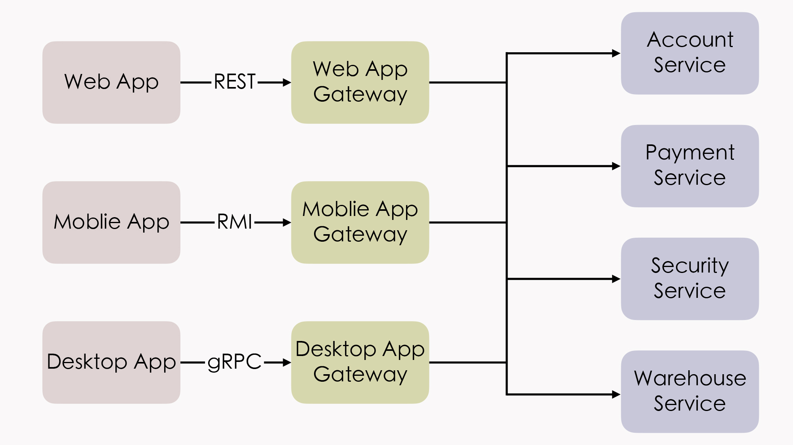

- 00 _导读 _ 什么是“The Fenix Project”？.md.html
- 00 开篇词 _ 如何构建一个可靠的分布式系统？.md.html
- 01 _ 原始分布式时代：Unix设计哲学下的服务探索.md.html
- 02 _ 单体系统时代：应用最广泛的架构风格.md.html
- 03 _ SOA时代：成功理论与失败实践.md.html
- 04 _ 微服务时代：SOA的革命者.md.html
- 05 _ 后微服务时代：跨越软件与硬件之间的界限.md.html
- 06 _ 无服务时代：“不分布式”云端系统的起点.md.html
- 07 _ 远程服务调用（上）：从本地方法到远程方法的桥梁.md.html
- 08 _ 远程服务调用（下）：如何选择适合自己的RPC框架？.md.html
- 09 _ RESTful服务（上）：从面向过程编程到面向资源编程.md.html
- 10 _ RESTful服务（下）：如何评价服务是否RESTful？.md.html
- 11 _ 本地事务如何实现原子性和持久性？.md.html
- 12 _ 本地事务如何实现隔离性？.md.html
- 13 _ 全局事务和共享事务是如何实现的？.md.html
- 14 _ 分布式事务之可靠消息队列.md.html
- 15 _ 分布式事务之TCC与SAGA.md.html
- 16 _ 域名解析系统，优化HTTP性能的第一步.md.html
- 17 _ 客户端缓存是如何帮助服务器分担流量的？.md.html
- 18 _ 传输链路，优化HTTP传输速度的小技巧.md.html
- 19 _ 如何利用内容分发网络来提高网络性能？.md.html
- 20 _ 常见的四层负载均衡的工作模式是怎样的？.md.html
- 21 _ 服务端缓存的三种属性.md.html
- 22 _ 分布式缓存如何与本地缓存配合，提高系统性能？.md.html
- 23 _ 认证：系统如何正确分辨操作用户的真实身份？.md.html
- 24 _ 授权（上）：系统如何确保授权的过程可靠？.md.html
- 25 _ 授权（下）：系统如何确保授权的结果可控？.md.html
- 26 _ 凭证：系统如何保证与用户之间的承诺是准确完整且不可抵赖的？.md.html
- 27 _ 保密：系统如何保证敏感数据无法被内外部人员窃取滥用？.md.html
- 28 _ 传输（上）：传输安全的基础，摘要、加密与签名.md.html
- 29 _ 传输（下）：数字证书与传输安全层.md.html
- 30 _ 验证：系统如何确保提交给服务的数据是安全的？.md.html
- 31 _ 分布式共识（上）：想用好分布式框架，先学会Paxos算法吧.md.html
- 32 _ 分布式共识（下）：Multi Paxos、Raft与Gossip，分布式领域的基石.md.html
- 33 _ 服务发现如何做到持续维护服务地址在动态运维中的时效性？.md.html
- 34 _ 路由凭什么作为微服务网关的基础职能？.md.html
- 35 _ 如何在客户端实现服务的负载均衡？.md.html
- 36 _ 面对程序故障，我们该做些什么？.md.html
- 37 _ 要实现某种容错策略，我们该怎么做？.md.html
- 38 _ 限流的目标与模式.md.html
- 39 _ 如何构建零信任网络安全？.md.html
- 40 _ 如何实现零信任网络下安全的服务访问？.md.html
- 41 _ 分布式架构中的可观测到底说的是什么？.md.html
- 42 _ 分析日志真的没那么简单.md.html
- 43 _ 一个完整的分布式追踪系统是什么样子的？.md.html
- 44 _ 聚合度量能给我们解决什么问题？.md.html
- 45 _ 模块导学：从微服务到云原生.md.html
- 46 _ 容器的崛起（上）：文件、访问、资源的隔离.md.html
- 47 _ 容器的崛起（下）：系统、应用、集群的封装.md.html
- 48 _ 以容器构建系统（上）：隔离与协作.md.html
- 49 _ 以容器构建系统（下）：韧性与弹性.md.html
- 50 _ 应用为中心的封装（上）：Kustomize与Helm.md.html
- 51 _ 应用为中心的封装（下）：Operator与OAM.md.html
- 52 _ Linux网络虚拟化（上）：信息是如何通过网络传输被另一个程序接收到的？.md.html
- 53 _ Linux网络虚拟化（下）：Docker所提供的容器通讯方案有哪些？.md.html
- 54 _ 容器网络与生态：与CNM竞争过后的CNI下的网络插件生态.md.html
- 55 _ 谈谈Kubernetes的存储设计理念.md.html
- 56 _ Kubernetes存储扩展架构：一个真实的存储系统如何接入或移除新存储设备？.md.html
- 57 _ Kubernetes存储生态系统：几种有代表性的CSI存储插件的实现.md.html
- 58 _ Kubernetes的资源模型与调度器设计.md.html
- 59 _ 透明通讯的涅槃（上）：通讯的成本.md.html
- 60 _ 透明通讯的涅槃（下）：控制平面与数据平面.md.html
- 61 _ 服务网格与生态：聊聊服务网格的两项标准规范.md.html
- 62 _ Fenix's Bookstore的前端工程.md.html
- 63 _ 基于Spring Boot的单体架构.md.html
- 64 _ 基于Spring Cloud的微服务架构.md.html
- 65 _ 基于Kubernetes的微服务架构.md.html
- 66 _ 基于Istio的服务网格架构.md.html
- 67 _ 基于云计算的无服务架构.md.html
- 春节特别放送（上）_ 有的放矢，事半功倍.md.html
- 春节特别放送（下）_ 积累沉淀，知行合一.md.html
- 用户故事 _ 詹应达：持续成长，不惧未来.md.html
- 结束语 _ 程序员之路.md.html
- 结课测试 _ 一套习题，测出你的掌握程度.md.html
- 捐赠
34 _ 路由凭什么作为微服务网关的基础职能？
你好，我是周志明。这节课我们要探讨的话题是微服务中的入口：网关。
网关（Gateway）这个词我们应该都很熟悉了，它在计算机科学中，尤其是计算机网络中十分常见，主要是用来表示位于内部区域边缘，与外界进行交互的某个物理或逻辑设备，比如你家里的路由器就属于家庭内网与互联网之间的网关。
在单体架构下，我们一般不太强调“网关”这个概念，因为给各个单体系统的副本分发流量的负载均衡器，实质上就承担着内部服务与外部调用之间的网关角色。
不过在微服务环境中，网关的存在感就极大地增强了，甚至成为微服务集群中必不可少的设施之一。
其中原因并不难理解。你可以想想看，在微服务架构下，每个服务节点都由不同的团队负责，它们有自己独立的、各不相同的能力，所以如果服务集群没有一个统一对外交互的代理人角色，那外部的服务消费者就必须知道所有微服务在集群中的精确坐标（上一讲我介绍过“坐标”的概念）。
这样，消费者不仅会受到服务集群的网络限制（不能确保集群中每个节点都有外网连接）、安全限制（不仅是服务节点的安全，外部自身也会受到如浏览器同源策略的约束）、依赖限制（服务坐标这类信息不属于对外接口承诺的内容，随时可能变动，不应该依赖它），就算是我们自己也不可能愿意记住每一个服务的坐标位置来编写代码。
所以，微服务中网关的首要职责，就是以统一的地址对外提供服务，将外部访问这个地址的流量，根据适当的规则路由到内部集群中正确的服务节点之上。也正是因为这样，微服务中的网关，也常被称为“服务网关”或者“API网关”。
可见，微服务的网关首先应该是个路由器，在满足此前提的基础上，网关还可以根据需要作为流量过滤器来使用，以提供某些额外的可选的功能。比如安全、认证、授权、限流、监控、缓存，等等。
简而言之：
网关 = 路由器（基础职能） + 过滤器（可选职能）
在“路由”这个基础职能里，服务网关主要考虑的是能够支持路由的“网络层次与协议”和“性能与可用性”两方面的因素。那么接下来，我们就围绕这两方面因素来讲解路由的原理与知识点。
网络层次与协议
在第20讲“负载均衡器”中，我曾给你介绍过四层流量转发与七层流量代理，这里所说的“层次”就是指OSI七层协议中的层次，更具体的话，其实就是“四层”和“七层”的意思。
仅从技术实现的角度来看，对于路由流量这项工作，负载均衡器与服务网关的实现是没有什么差别的，很多服务网关本身就是基于老牌的负载均衡器来实现的，比如Nginx、HAProxy对应的Ingress Controller，等等；而从路由目的这个角度来看，负载均衡器与服务网关的区别在于，前者是为了根据均衡算法对流量进行平均地路由，后者是为了根据流量中的某种特征进行正确地路由。
也就是说，网关必须能够识别流量中的特征，这意味着网关能够支持的网络层次、通讯协议的数量，将会直接限制后端服务节点能够选择的服务通讯方式：
- 如果服务集群只提供如Etcd这类直接基于TCP访问的服务，那就可以只部署四层网关，以TCP报文中的源地址、目标地址为特征进行路由；
- 如果服务集群要提供HTTP服务的话，就必须部署一个七层网关，根据HTTP的URL、Header等信息为特征进行路由；
- 如果服务集群要提供更上层的WebSocket、SOAP等服务，那就必须要求网关同样能够支持这些上层协议，才能从中提取到特征。
我们直接来看一个例子吧。
这里是一段基于SpringCloud实现的Fenix’s Bootstore中，用到的Netflix Zuul网关的配置。Zuul是HTTP网关，“/restful/accounts/**”和“/restful/pay/**”是HTTP中URL的特征，而配置中的“serviceId”就是路由的目标服务。
routes:
account:
path: /restful/accounts/**
serviceId: account
stripPrefix: false
sensitiveHeaders: "*"
payment:
path: /restful/pay/**
serviceId: payment
stripPrefix: false
sensitiveHeaders: "*"
最后呢，我还想给你一个提醒：现在，围绕微服务的各种技术都处于快速发展期，我其实并不提倡你针对每一种框架本身，去记忆配置的细节，也就是你并不需要去纠结前面给出的这些配置的确切写法、每个指令的含义。因为如果你从根本上理解了网关的原理，那你参考一下技术手册，很容易就能够将前面给出的这些信息改写成Kubernetes Ingress Controller、Istio VirtualServer或者是其他服务网关所需的配置形式。
OK， 我们再来了解下服务网关的另一个能够支持路由的重要因素：性能与可用性。
性能与可用性
性能与可用性是网关的一大关注点。因为网关是所有服务对外的总出口，是流量必经之地，所以网关的路由性能是全局的、系统性的，如果某个服务经过网关路由会有10毫秒的性能损失，就意味着整个系统所有服务的性能都会降低10毫秒。
网关的性能与它的工作模式和自身实现都有关系，但毫无疑问，工作模式是最主要的。如果网关能够采用三角传输模式（DSR，即数据链路层负载均衡模式），原理上就决定了性能一定会比代理模式来的强（DSR、代理等都是负载均衡的基础知识，你可以去回顾复习一下）。
不过，因为今天REST和JSON-RPC等基于HTTP协议的接口形式，在对外部提供的服务中占绝对主流的地位，所以我们这里所讨论的服务网关默认都必须支持七层路由，这样通常就默认无法转发，只能采用代理模式。
那么在这个前提约束下，网关的性能就主要取决于它们是如何代理网络请求的，也就是它们的网络I/O模型了。既然如此，下面我们就一起来了解下网络I/O的基础知识，剖析下网络I/O模型的工作原理，借此也掌握不同网关的特点与性能差异。
网络I/O的基础知识
在套接字接口的抽象下，网络I/O的本质其实是Socket的读取，Socket在操作系统接口中被抽象为了数据流，而网络I/O就可以理解为是对流的操作。
对于每一次网络访问，从远程主机返回的数据会先存放到操作系统内核的缓冲区中，然后再从内核的缓冲区，复制到应用程序的地址空间，所以当一次网络请求发生后，就会按顺序经历“等待数据从远程主机到达缓冲区”和“将数据从缓冲区拷贝到应用程序地址空间”两个阶段。
那么，根据完成这两个阶段的不同方法，我们可以把网络I/O模型总结为两类、五种模型。两类是指同步I/O与异步I/O；五种是指在同步I/O中又划分出了阻塞I/O、非阻塞I/O、多路复用I/O和信号驱动I/O四种细分模型。
同步就是指调用端发出请求之后，在得到结果之前必须一直等待，与之相对的就是异步，在发出调用请求之后将立即返回，不会马上得到处理结果，这个结果将通过状态变化和回调来通知给调用者。而阻塞和非阻塞I/O针对请求处理的过程，就是指在收到调用请求、返回结果之前，当前处理线程是否会被挂起。
当然，这种概念上的讲述估计你也不好理解，所以下面我就以“你如何领到盒饭”这个情景，来给你类比解释一下：
异步I/O（Asynchronous I/O）
这就好比你在某团外卖订了个盒饭，付款之后你自己该干嘛还干嘛去，饭做好了骑手自然会到门口打电话通知你。所以说，异步I/O中，数据到达缓冲区后，不需要由调用进程主动进行从缓冲区复制数据的操作，而是在复制完成后，由操作系统向线程发送信号，所以它一定是非阻塞的。
同步I/O（Synchronous I/O）
这就好比你自己去饭堂打饭，这时可能有以下几种情形发生：
- 阻塞I/O（Blocking I/O）
你去到饭堂，发现饭还没做好，你也干不了别的，只能打个瞌睡（线程休眠），直到饭做好。阻塞I/O是最直观的I/O模型，逻辑清晰，也比较节省CPU资源，但缺点就是线程休眠所带来的上下文切换，这是一种需要切换到内核态的重负载操作，不应当频繁进行。
- 非阻塞I/O（Non-Blocking I/O）
你去到饭堂，发现饭还没做好，你就回去了，然后每隔3分钟来一次饭堂看饭做好了没，直到饭做好。非阻塞I/O能够避免线程休眠，对于一些很快就能返回结果的请求，非阻塞I/O可以节省上下文切换的消耗，但是对于较长时间才能返回的请求，非阻塞I/O反而白白浪费了CPU资源，所以目前并不常用。
- 多路复用I/O（Multiplexing I/O）
多路复用I/O本质上是阻塞I/O的一种，但是它的好处是可以在同一条阻塞线程上处理多个不同端口的监听。可以类比这样一个情景：你是活雷锋，代表整个宿舍去饭堂打饭，去到饭堂，发现饭还没做好，还是继续打瞌睡，不过哪个舍友的饭好了，你就马上把那份饭送回去，然后继续打着瞌睡哼着歌等待其他的饭做好。多路复用I/O是目前的高并发网络应用的主流，它下面还可以细分select、epoll、kqueue等不同实现。
- 信号驱动I/O（Signal-Driven I/O）
你去到饭堂，发现饭还没做好，但你跟厨师熟，跟他说饭做好了叫你，然后回去该干嘛干嘛，等收到厨师通知后，你把饭从饭堂拿回宿舍。这里厨师的通知就是那个“信号”，信号驱动I/O与异步I/O的区别是“从缓冲区获取数据”这个步骤的处理，前者收到的通知是可以开始进行复制操作了，也就是你要自己把饭从饭堂拿回宿舍，在复制完成之前线程处于阻塞状态，所以它仍属于同步I/O操作；而后者收到的通知是复制操作已经完成，即外卖小哥已经把饭送到了。
那么显而易见，异步I/O模型是最方便的，毕竟能叫外卖谁愿意跑饭堂啊，但前提是你学校里得让送美团外卖。所以，异步I/O受限于操作系统，Windows NT内核早在3.5以后，就通过IOCP实现了真正的异步I/O模型。而Linux系统下，是在Linux Kernel 2.6才首次引入，目前也还并不完善，因此在Linux下实现高并发网络编程时，仍然是以多路复用I/O模型模式为主。
网关的性能考量
好，回到服务网关的话题上，现在我们掌握了网络I/O模型的知识，就可以在理论上定性分析不同网关的性能差异了。
服务网关处理一次请求代理时，包含了两组网络操作，分别是“作为服务端对外部请求的应答”和“作为客户端对内部服务的调用”。理论上这两组网络操作可以采用不同的网络I/O模型去完成，但一般来说并没有必要这样做。
为什么呢？我以Zuul网关来给你举个例子。
在Zuul 1.0时，它采用的是阻塞I/O模型，来进行最经典的“一条线程对应一个连接”（Thread-per-Connection）的方式来代理流量，而采用阻塞I/O就意味着它会有线程休眠，就有上下文切换的成本。
所以如果后端服务普遍属于计算密集型（CPU Bound，可以通俗理解为服务耗时比较长，主要消耗在CPU上）时，这种模式能够节省网关的CPU资源，但如果后端服务普遍都是I/O密集型（I/O Bound，可以理解服务都很快返回，主要消耗在I/O上），它就会由于频繁的上下文切换而降低性能。
那么到了Zuul的2.0版本，最大的改进就是基于Netty Server实现了异步I/O模型来处理请求，大幅度减少了线程数，获得了更高的性能和更低的延迟。根据Netflix官方自己给出的数据，Zuul 2.0大约要比Zuul 1.0快20%左右。当然还有一些网关，我们也可以自行配置，或者根据环境选择不同的网络I/O模型，典型的就是Nginx，可以支持在配置文件中指定select、poll、epoll、kqueue等并发模型。
不过，网关的性能高低一般只能去定性分析，要想定量地说哪一种网关性能最高、高多少，是很难的，就像我们都认可Chrome要比IE快，但具体要快上多少，我们很难说得清楚。
所以尽管我上面引用了Netflix官方对Zuul两个版本的量化对比，网络上也有不少关于各种网关的性能对比数据，但要是脱离具体应用场景去定量地比较不同网关的性能差异，还是难以令人信服，毕竟不同的测试环境、后端服务都会直接影响结果。
网关的可用性考量
OK，我们还有一点要关注的就是网关的可用性问题。任何系统的网络调用过程中都至少会有一个单点存在，这是由用户只通过唯一的一个地址去访问系统决定的。即使是淘宝、亚马逊这样全球多数据中心部署的大型系统，给多数据中心翻译地址的权威DNS服务器，也可以认为是它的单点。
而对于更普遍的小型系统（小型是相对淘宝这些而言）来说，作为后端对外服务代理人角色的网关，经常被看作是系统的入口，往往很容易成为网络访问中的单点。这时候，它的可用性就尤为重要。
另外，由于网关具有唯一性，它不像之前讲服务发现时的那些注册中心一样，可以直接做个集群，随便访问哪一台都可以解决问题。所以针对这个情况，在网关的可用性方面，我们应该考虑到以下几点：
- 网关应尽可能轻量。尽管网关作为服务集群统一的出入口，可以很方便地做安全、认证、授权、限流、监控等功能，但在给网关附加这些能力时，我们还是要仔细权衡，取得功能性与可用性之间的平衡，不然过度增加网关的职责是很危险的。
- 网关选型时，应该尽可能选择较成熟的产品实现。比如Nginx Ingress Controller、KONG、Zuul等等这些经受过长期考验的产品，我们不能一味只考虑性能，选择最新的产品，毕竟性能与可用性之间的平衡也需要做好权衡。
- 在需要高可用的生产环境中，应当考虑在网关之前部署负载均衡器或者等价路由器（ECMP），让那些更成熟健壮的（往往是硬件物理设备）的设施去充当整个系统的入口地址，这样网关就可以很方便地设置多路扩展了。
这里我提到了网关的唯一性、高可用与扩展，所以我顺带也说一下近年来随着微服务一起火起来的概念“BFF”（Backends for Frontends）。
这个概念目前还没有权威的中文翻译，不过在我们讨论的上下文里，它的意思可以理解为，网关不必为所有的前端提供无差别的服务，而是应该针对不同的前端，聚合不同的服务，提供不同的接口和网络访问协议支持。
比如，运行于浏览器的Web程序，由于浏览器一般只支持HTTP协议，服务网关就应该提供REST等基于HTTP协议的服务，但同时我们也可以针对运行于桌面系统的程序，部署另外一套网关，它能与Web网关有完全不同的技术选型，能提供基于更高性能协议（如gRPC）的接口，来获得更好的体验。
所以这个概念要表达的就是，在网关这种边缘节点上，针对同样的后端集群，裁剪、适配、聚合出适应不一样的前端服务，有助于后端的稳定，也有助于前端的赋能。

小结
这节课我们主要探讨的话题是网关，但我只给你介绍了网关的路由职能，其他可以在网关上实现的限流、容错、安全、认证等等的过滤职能，在课程中都有专门的讲解，所以这里我们就不展开了。
那么在路由方面，因为现在我们所讨论的服务网关默认都必须支持七层路由，通常就默认无法转发，只能采用代理模式。因此你要掌握这样一个核心知识点：在必须支持七层路由的前提下，网关的性能主要取决于它们是如何代理网络请求的，也就是说，你要了解它们的网络I/O模型。现在，在学习了典型的网络I/O模型的工作原理之后，希望你在后面的学习或者实践过程当中，看到网关的I/O模型，你就能够对它的特点与性能有个大致的判断。
一课一思
这节课的最后，我给你介绍了网关路由职能在BFF方面的应用。那么除了BFF之外，你还用网关来做什么？另外，如今微服务兴起，在网关这个概念独立之前，你觉得这项功能是如何实现的呢？
欢迎给我留言，分享你的答案。如果觉得有收获，也欢迎你把今天的内容分享给更多的朋友。感谢你的阅读，我们下一讲再见。
© 2019 - 2023 Liangliang Lee. Powered by gin and hexo-theme-book.